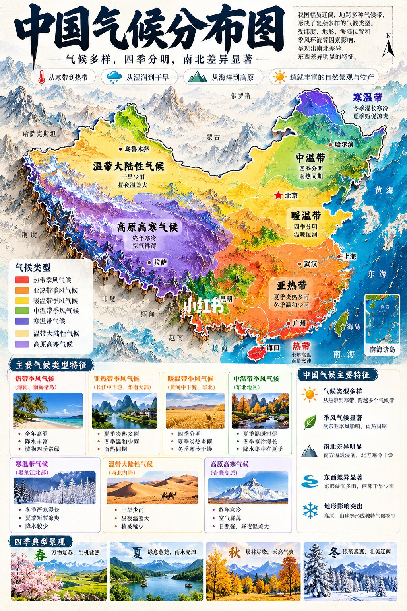
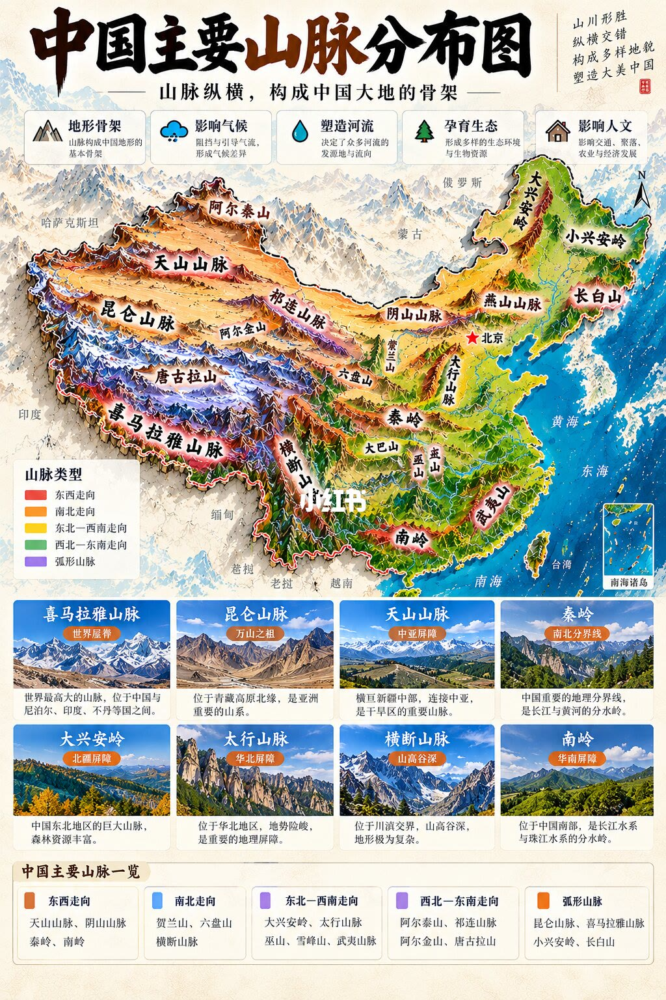
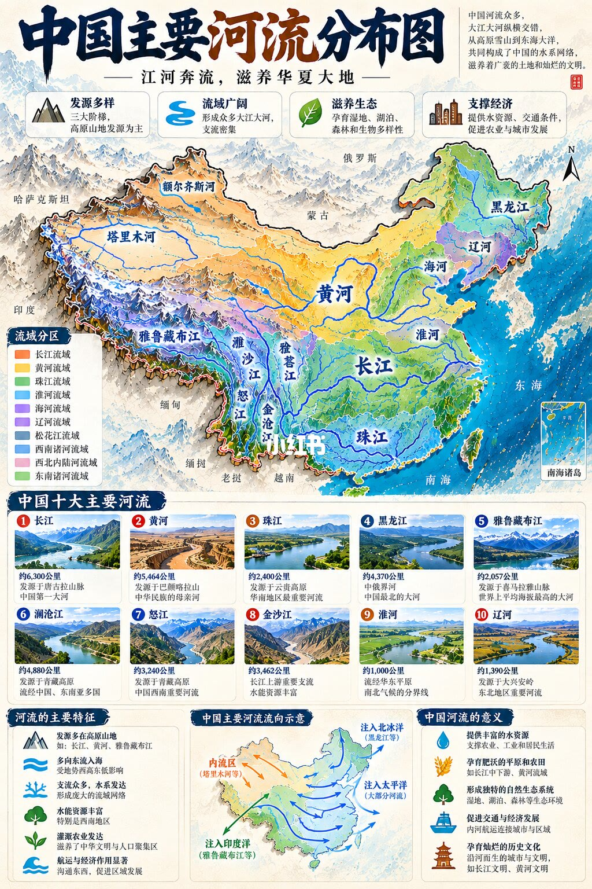
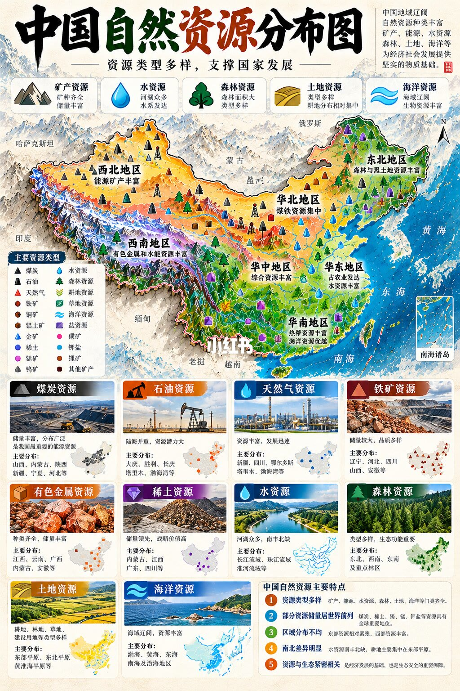

第 1 页：中国气候分布图

导语强调：国土辽阔、地形复杂、纬度跨度大、季风环流影响，气候类型多样、区域差异显著。页顶四个图标概括冷↔热、湿↔干、海洋↔高原、自然物产等维度。
地图分区（据图例）：热带季风（海南及台湾南端）、亚热带季风（东南大部）、暖温带季风（华北）、中温带季风（东北）、寒温带季风（黑龙江北端）、温带大陆性（西北内陆）、高原高寒（青藏）。
七类特征卡：热带全年高温多雨；亚热带夏热湿、冬温和；暖温带四季分明、夏热冬冷干；中温带夏短暖、冬长寒；寒温带冬极寒、夏凉短；大陆性降水少、日较差大；高原高寒全年偏冷、空气稀薄、辐射强。
右侧总括：类型多样、季风显著（雨热同期）、南北湿冷差异、东西湿干差异、地形塑造局地气候。底栏春夏秋冬四景呼应「多样气候」。
第 2 页：中国主要山脉分布图

页眉五个作用：地形骨架、影响气流与气候、塑造水系、孕育生态、影响交通聚落与农业。
走向图例：东西向（天山、阴山、秦岭、南岭等）、南北向（贺兰、六盘、横断等）、东北—西南（大兴安岭、太行、巫山、雪峰、武夷等）、西北—东南（阿尔泰、祁连、阿尔金、唐古拉等）、弧形（昆仑、喜马拉雅、小兴安岭、长白等）。
八卡要点：喜马拉雅「世界屋脊」；昆仑「万山之祖」；天山「中亚屏障」；秦岭「南北分界」；大兴安岭「北疆屏障」；太行「华北屏障」；横断「高山深谷」；南岭「华南屏障」兼长江—珠江水系分野。
第 3 页：中国主要河流分布图

导语：江河自高原山地东流入海，滋养文明。价值点：源地多样、流域广阔、生态涵养、支撑水运与城镇农业。
流域分区用不同颜色标出黄河、长江、珠江、淮河、辽河、黑龙江、西南诸河、西北内流区等。十大河流卡给出长度量级与定位：长江最长；黄河母亲河；珠江华南干流；黑龙江北疆界河；雅鲁藏布高海拔；澜沧/怒江跨境；金沙江水电富集；淮河南北气候过渡带；辽河东北干流。
底部归纳：山地发源、地势西高东低决定东流为主、支流密、水电与灌溉航运价值高；流向分内流、北冰洋、太平洋、印度洋四类归宿。
第 4 页：中国自然资源分布图

分区印象：西北能源矿产；西南有色与水电；东北森林与黑土；华北煤铁；华中综合；华东农业与水；华南热带林与海洋。
十类卡片：煤炭（晋蒙陕新等）、石油（大庆胜利辽河塔里木渤海湾等）、天然气（新疆四川鄂尔多斯等）、铁矿、有色金属、稀土（储量领先）、水资源、森林、土地（耕地偏东平原）、海洋资源。
特征总结：类型多样、多项居世界前列、分布不均（能源偏西/北，水与耕地偏东/南）、南北水土地差异显著、资源开发与生态安全绑定。
说明：标题口令写「气候 × 河流 × 山脉」，本笔记第 4 页扩展到自然资源，一并按页序收录。
读图抓手
- 气候：先分清季风区 vs 大陆性/高原，再记南北湿冷、东西湿干。
- 山脉：按走向记骨架，秦岭、喜马拉雅、横断是高频考点。
- 河流：流域填色 + 十大河流定位；注意内流与外流归宿。
- 资源：类型全、分布不均——能源偏西/北，水与耕地偏东/南。